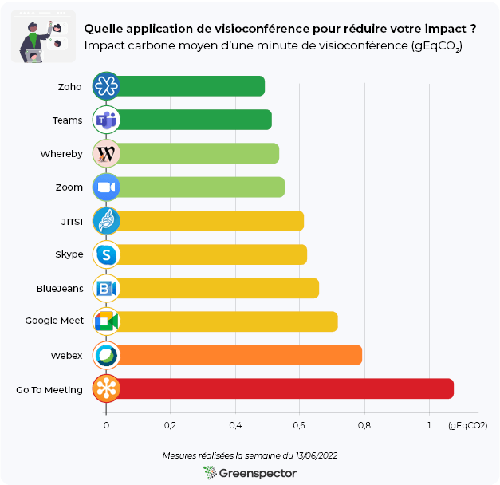
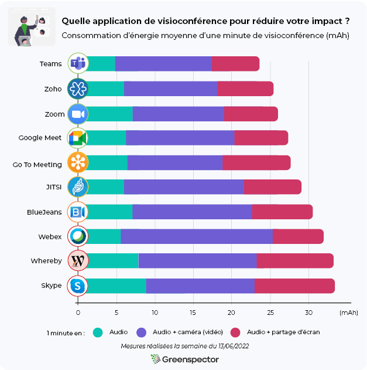
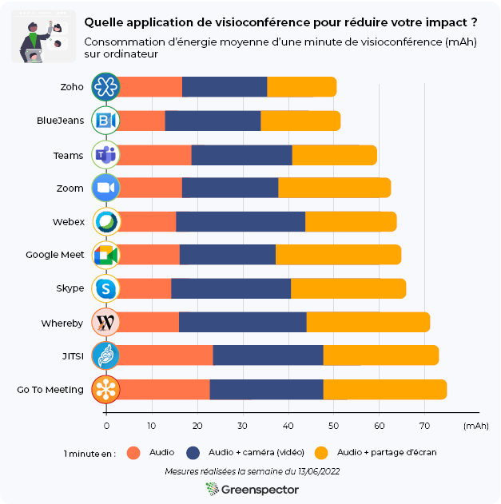
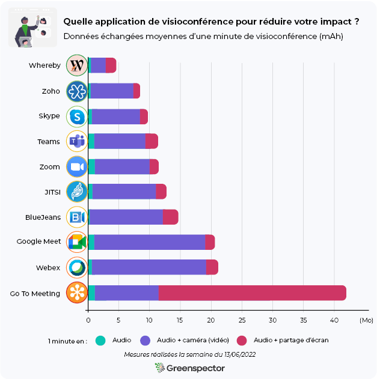

Pour cette nouvelle édition 2022 de notre classement, nous avons décidé de procéder différemment. Contrairement à l’édition 2021, nous avons réduit le nombre d’applications mesurées. Nous avons à la fois réalisé des mesures sur téléphone mais également PC pour répondre à la demande générale. L’objectif de ces nouvelles mesures est d’observer comment les solutions se situent en termes d’impact environnemental (Carbone) les unes par rapport aux autres sur des scénarios utilisateurs courants mais aussi sur deux plateformes différentes : PC versus téléphone.
Nous avons comparé 10 applications : BlueJeans, Google Meet, Go To Meeting, JITSI, Skype, Teams, Webex, Whereby, Zoho Meetings et Zoom.

Pour chacune de ses applications, mesurées sur un smartphone S7 (Android 8) et sur un ordinateur, les trois scénarios suivants ont été réalisés au travers de notre Greenspector Test Runner, permettant la réalisation de tests manuels sur une durée de 1 minute en one-to-one :
- Conférence audio uniquement
- Conférence audio et vidéo (caméra activée de chaque côté)
- Conférence audio et partage d’écran
En savoir plus sur la méthodologie.
Classement projeté en impact carbone des applications de visioconférences (gEqCO2) sur mobile

| Scénario / Année | 1 mn de visioconférence en audio | 1 mn de visioconférence en audio + caméra | 1 mn de visioconférence en audio + partage d’écran |
|---|---|---|---|
| 2022 | 0,31 gEqCO2 | 1,10 gEqCO2 | 0,54 gEqCO2 |
| Équivalence en mètres parcourus en véhicule léger | 2,76 mètres | 9,82 mètres | 4,82 mètres |
En moyenne, une minute de visioconférence en audio impacte 71% moins qu’avec les caméras activées et 42% de moins qu’en partageant un écran.
Le Top 3 d’une minute de visioconférence en moyenne : Zoho Meeting (0,49 gEqCO2), Microsoft Teams (0,513 gEqCO2) et Whereby (0,533 gEqCO2). Zoho Meeting premier de ce classement côté impact carbone impacte 2,2 fois moins que, GoToMeeting, le dernier de ce classement. La moyenne de ce classement est de 0,657 gEqCO2, 4 solutions se trouvent au-dessus.
La principale partie des impacts Carbone se situent sur la partie device utilisateur (61%), suivie par la partie Serveur (23%) et enfin la partie Réseau (16%).

Voici les trois applications mobiles les moins impactantes en termes de Carbone suivant le scénario :
| Audio (Top 3) | Audio + caméra (Top 3) | Audio + partage d’écran (Top 3) |
|---|---|---|
| Microsoft Teams | Whereby | Microsoft Teams & Zoho Meeting |
| Cisco Webex Meeting | Zoho Meeting | Zoom & Google Meet |
| JITSI Meet | Teams & Zoom | Cisco Webex Meeting |
Consommation d’énergie des applications de visioconférences (mAh) sur mobile

Voici les moyennes de consommation d’énergie pour les trois scénarios sur téléphone :
| Scénario / Année | 1 mn de visioconférence en audio | 1 mn de visioconférence en audio + caméra | 1 mn de visioconférence en audio + partage d’écran |
|---|---|---|---|
| 2022 | 6,68 mAh | 14,29 mAh | 7,82 mAh |
En moyenne, une minute de visioconférence avec la vidéo activée consomme 2,1 fois plus d’énergie qu’en audio ; quant au partage d’écran, il engendre une surconsommation de 17% par rapport à l’audio seule.
Consommation d’énergie des applications de visioconférences (mAh) sur PC !

Voici les moyennes de consommation d’énergie sur ordinateur :
| Moyenne : 1 mn de visioconférence en audio | Moyenne : 1 mn de visioconférence en audio + caméra | Moyenne : 1 mn de visioconférence en audio + partage d’écran |
|---|---|---|
| 17,255 mAh | 23,654 mAh | 22,82mAh |
Ici, une minute de visioconférence les caméras activées consomme 1,4 fois plus qu’avec l’audio ; quand au partage d’écran il engendre une surconsommation de 24% de plus qu’avec l’audio seule. On constate donc ici une différence de consommation énergétique beaucoup plus conséquente sur téléphone en fonction du scénario.
Le Top 3 (tous scénarios confondus) en consommation d’énergie en prenant en compte la consommation du téléphone et de l’ordinateur : Zoho Meeting (76,21 mAh), BlueJeans (81,70 mAh) et Microsoft Teams (83 mAh). Zoho Meeting premier de ce classement côté consommation d’énergie consomme 1,4 fois moins que le dernier de ce classement : Whereby.
Voici les trois applications mobiles les moins impactantes en termes de Carbone suivant le scénario :
| Audio (Top 3) | Audio + caméra (Top 3) | Audio + partage d’écran (Top 3) |
|---|---|---|
| Blue Jeans | Zoho Meeting | Zoho Meeting |
| Cisco Webex Meeting | Zoom | Teams |
| Google Meet | Teams | BlueJeans |
Données échangées des applications de visioconférences (Mo) sur mobile

Voici les moyennes des données échangées pour les trois scénarios :
| Scénario / Année | 1 mn de visioconférence en audio | 1 mn de visioconférence en audio + caméra | 1 mn de visioconférence en audio + partage d’écran |
|---|---|---|---|
| 2022 | 0,88 Mo | 10,34 Mo | 4,49 Mo |
C’est sur la consommation de données que les écarts se creusent entre les outils et les usages.
En moyenne, une minute de visioconférence en audio consomme 91% moins (ou 12 fois moins) de données échangées qu’avec les caméras activées et 80% de moins qu’en partageant un écran.
Le Top 3 (tout scénario confondus) en échange de données : Whereby (4,54 Mo), Zoho Meeting (8,39 Mo) et Skype (9,68 Mo). Whereby (via Firefox) premier de ce classement côté données échangées en consomme 9,2 fois moins que le dernier de ce classement : GoToMeeting.
Voici les trois applications les moins consommatrices de données suivant le scénario :
| Audio (Top 3) | Audio + caméra (Top 3) | Audio + partage d’écran (Top 3) |
|---|---|---|
| Blue Jeans | Whereby | Zoho Meeting |
| Zoho Meeting | Zoho Meeting | Skype |
| Whereby | Skype | Zoom |
Et pour nos usages au quotidien de la visioconférence :
Dans l’étude effectuée en 2021 nous avons indiqué que la visioconférence est préférable à un déplacement en voiture. Effectivement cette solution est moins polluante, cependant attention aux effets rebond ! Avec la pandémie mondiale, le télétravail s’est largement répandu dans de nombreuses entreprises, cependant cette pratique encourage un nombre croissant de personnes à s’éloigner de leur lieu de travail. Donc en fonction du rythme de télétravail imposé et des moyens de transport utilisés, les gains environnementaux du télétravail peuvent être contrebalancés.
Également il faut marquer un point d’attention à l’augmentation de consommation d’énergie des foyers engendrés. On peut considérer que cette hausse peut compenser la baisse de besoin en énergie dans les locaux d’entreprises mais cela est à prendre au cas par cas et comporte de nombreux facteurs.
Exemples :
- Office vs Home Working: How we can save our carbon footprint.
- Comment réduire son empreinte écologique au travail ?
- Le télétravail est-il vraiment meilleur pour l’environnement ?
Versions mesurées :
- Microsoft Teams (4.10.1) / ordinateur (1.5.00.10453)
- Zoom (5.10.4) / ordinateur (5.10.7.3311)
- Google Meet (2022.05.15.450927857) / client léger sur Firefox
- Cisco Webex Meetings (42.6.0.239) / ordinateur (42.5.0.22187)
- GoToMeeting (4.8.1) / client léger sur Chrome
- BlueJeans (2.2.0.142) / ordinateur (2.29.1-3)
- Skype (8.82.0.403) / ordinateur (8.83.0.411
- Whereby (2.3.0) / client léger Firefox
- Zoho Meeting (2.2.1) / client léger Firefox
- Jitsi Meet (21.3.0)/ client léger Firefox
Pour chacune de ses applications, mesurées sur un smartphone S7 (Android 8), les scénarios utilisateurs ont été réalisés au travers de notre Greenspector Test Runner, permettant la réalisation de tests manuels.
Une fois l’application téléchargée et installée, nous exécutons nos mesures sur les paramètres de base et d’origine de l’application. Aucune modification n’est réalisée (même si certaines options permettent de réduire la consommation d’énergie ou ressources : mode économie de données, thème sombre etc. Cependant nous vous encourageons à vérifier les paramètres de votre application favorite afin d’en optimiser l’impact.
Chaque mesure est la moyenne de 5 mesures homogènes (avec un écart-type faible). Les consommations mesurées sur le smartphone donné selon un réseau de type Wi-Fi peuvent être différentes sur un PC portable avec un réseau filaire par exemple. Pour chacune des itérations, le cache est préalablement vidé.
Pour les mesures sur ordinateur nous avons utilisé un connecteur Greenspector couplé à un module Yochto-Watt afin de mesurer la consommation énergétique. De la même manière que pour les applications mobiles les clients lourds, lorsqu’il en existait un, ont été téléchargés, puis installé sans changer les paramètres de base. Cette puce ne permet de mesurer que la consommation énergétique pour l’instant. C’est pourquoi les analyses de l’impact carbone et des données échangées de cet article ne s’appuient que sur les mesures réalisées sur téléphone. Ressource supplémentaire sur le Yoctopuce.
Découvrez comment Greenspector évalue l’empreinte environnementale de l’utilisation d’un service numérique. (Méthodologie complète)